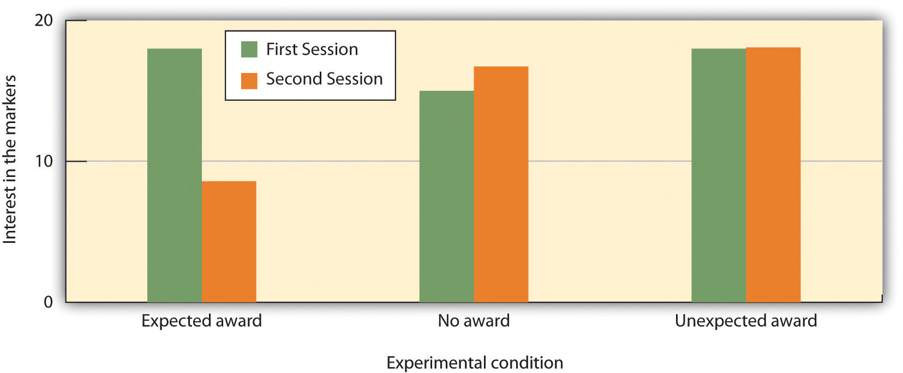
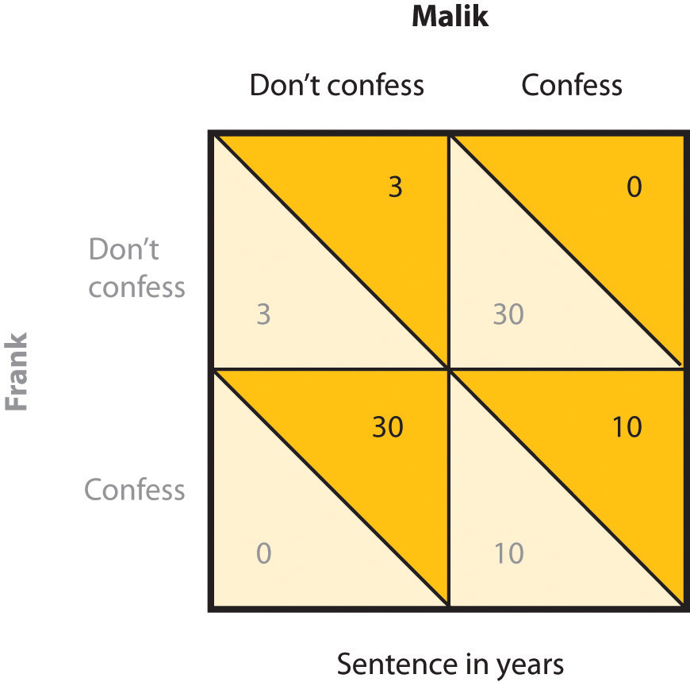

The principles of learning are some of the most general and most powerful in all of psychology. It would be fair to say that these principles account for more behavior using fewer principles than any other set of psychological theories. The principles of learning are applied in numerous ways in everyday settings. For example, operant conditioning has been used to motivate employees, to improve athletic performance, to increase the functioning of those suffering from developmental disabilities, and to help parents successfully toilet train their children (Simek & O’Brien, 1981; Pedalino & Gamboa, 1974; Azrin & Foxx, 1974; McGlynn, 1990).Simek, T. C., & O’Brien, R. M. (1981). Total golf: A behavioral approach to lowering your score and getting more out of your game. New York, NY: Doubleday & Company; Pedalino, E., & Gamboa, V. U. (1974). Behavior modification and absenteeism: Intervention in one industrial setting. Journal of Applied Psychology, 59, 694–697; Azrin, N., & Foxx, R. M. (1974). Toilet training in less than a day. New York, NY: Simon & Schuster; McGlynn, S. M. (1990). Behavioral approaches to neuropsychological rehabilitation. Psychological Bulletin, 108, 420–441. In this section we will consider how learning theories are used in advertising, in education, and in understanding competitive relationships between individuals and groups.
Classical conditioning has long been, and continues to be, an effective tool in marketing and advertising (Hawkins, Best, & Coney, 1998).Hawkins, D., Best, R., & Coney, K. (1998.) Consumer Behavior: Building Marketing Strategy (7th ed.). Boston, MA: McGraw-Hill. The general idea is to create an advertisement that has positive features such that the ad creates enjoyment in the person exposed to it. The enjoyable ad serves as the unconditioned stimulus (US), and the enjoyment is the unconditioned response (UR). Because the product being advertised is mentioned in the ad, it becomes associated with the US, and then becomes the conditioned stimulus (CS). In the end, if everything has gone well, seeing the product online or in the store will then create a positive response in the buyer, leading him or her to be more likely to purchase the product.
Can you determine how classical conditioning is being used in these commercials?
A similar strategy is used by corporations that sponsor teams or events. For instance, if people enjoy watching a college basketball team playing basketball, and if that team is sponsored by a product, such as Pepsi, then people may end up experiencing positive feelings when they view a can of Pepsi. Of course, the sponsor wants to sponsor only good teams and good athletes because these create more pleasurable responses.
Advertisers use a variety of techniques to create positive advertisements, including enjoyable music, cute babies, attractive models, and funny spokespeople. In one study, Gorn (1982)Gorn, G. J. (1982). The effects of music in advertising on choice behavior: A classical conditioning approach. Journal of Marketing, 46(1), 94–101. showed research participants pictures of different writing pens of different colors, but paired one of the pens with pleasant music and the other with unpleasant music. When given a choice as a free gift, more people chose the pen color associated with the pleasant music. And Schemer, Matthes, Wirth, and Textor (2008)Schemer, C., Matthes, J. R., Wirth, W., & Textor, S. (2008). Does “Passing the Courvoisier” always pay off? Positive and negative evaluative conditioning effects of brand placements in music videos. Psychology & Marketing, 25(10), 923–943. found that people were more interested in products that had been embedded in music videos of artists that they liked and less likely to be interested when the products were in videos featuring artists that they did not like.
Another type of ad that is based on principles of classical conditioning is one that associates fear with the use of a product or behavior, such as those that show pictures of deadly automobile accidents to encourage seatbelt use or images of lung cancer surgery to discourage smoking. These ads have also been found to be effective (Das, de Wit, & Stroebe, 2003; Perloff, 2003; Witte & Allen, 2000),Das, E. H. H. J., de Wit, J. B. F., & Stroebe, W. (2003). Fear appeals motivate acceptance of action recommendations: Evidence for a positive bias in the processing of persuasive messages. Personality & Social Psychology Bulletin, 29(5), 650–664; Perloff, R. M. (2003). The dynamics of persuasion: Communication and attitudes in the 21st century (2nd ed.). Mahwah, NJ: Lawrence Erlbaum Associates; Witte, K., & Allen, M. (2000). A meta-analysis of fear appeals: Implications for effective public health campaigns. Health Education & Behavior, 27(5), 591–615. due in large part to conditioning. When we see a cigarette and the fear of dying has been associated with it, we are hopefully less likely to light up.
Taken together then, there is ample evidence of the utility of classical conditioning, using both positive as well as negative stimuli, in advertising. This does not, however, mean that we are always influenced by these ads. The likelihood of conditioning being successful is greater for products that we do not know much about, where the differences between products are relatively minor, and when we do not think too carefully about the choices (Schemer et al., 2008).Schemer, C., Matthes, J. R., Wirth, W., & Textor, S. (2008). Does “Passing the Courvoisier” always pay off? Positive and negative evaluative conditioning effects of brand placements in music videos. Psychology & Marketing, 25(10), 923–943.
John B. Watson and B. F. Skinner believed that all learning was the result of reinforcement, and thus that reinforcement could be used to educate children. For instance, Watson wrote in his book on behaviorism,
Give me a dozen healthy infants, well-formed, and my own specified world to bring them up in and I’ll guarantee to take any one at random and train him to become any type of specialist I might select—doctor, lawyer, artist, merchant-chief and, yes, even beggar-man and thief, regardless of his talents, penchants, tendencies, abilities, vocations, and race of his ancestors. I am going beyond my facts and I admit it, but so have the advocates of the contrary and they have been doing it for many thousands of years (Watson, 1930, p. 82).Watson, J. B. (1930). Behaviorism (Rev. ed.). New York, NY: Norton.
Skinner promoted the use of programmed instruction, an educational tool that consists of self-teaching with the aid of a specialized textbook or teaching machine that presents material in a logical sequence (Skinner, 1965).Skinner, B. F. (1965). The technology of teaching. Proceedings of the Royal Society B Biological Sciences, 162(989): 427–43. doi:10.1098/rspb.1965.0048 Programmed instruction allows students to progress through a unit of study at their own rate, checking their own answers and advancing only after answering correctly. Programmed instruction is used today in many classes, for instance to teach computer programming (Emurian, 2009).Emurian, H. H. (2009). Teaching Java: Managing instructional tactics to optimize student learning. International Journal of Information & Communication Technology Education, 3(4), 34–49.
Although reinforcement can be effective in education, and teachers make use of it by awarding gold stars, good grades, and praise, there are also substantial limitations to using reward to improve learning. To be most effective, rewards must be contingent on appropriate behavior. In some cases teachers may distribute rewards indiscriminately, for instance by giving praise or good grades to children whose work does not warrant it, in the hope that they will “feel good about themselves” and that this self-esteem will lead to better performance. Studies indicate, however, that high self-esteem alone does not improve academic performance (Baumeister, Campbell, Krueger, & Vohs, 2003).Baumeister, R. F., Campbell, J. D., Krueger, J. I., & Vohs, K. D. (2003). Does high self-esteem cause better performance, interpersonal success, happiness, or healthier lifestyles? Psychological Science in the Public Interest, 4, 1–44. When rewards are not earned, they become meaningless and no longer provide motivation for improvement.
Another potential limitation of rewards is that they may teach children that the activity should be performed for the reward, rather than for one’s own interest in the task. If rewards are offered too often, the task itself becomes less appealing. Mark Lepper and his colleagues (Lepper, Greene, & Nisbett, 1973)Lepper, M. R., Greene, D., & Nisbett, R. E. (1973). Undermining children’s intrinsic interest with extrinsic reward: A test of the “overjustification” hypothesis. Journal of Personality & Social Psychology, 28(1), 129–137. studied this possibility by leading some children to think that they engaged in an activity for a reward, rather than because they simply enjoyed it. First, they placed some fun felt-tipped markers in the classroom of the children they were studying. The children loved the markers and played with them right away. Then, the markers were taken out of the classroom, and the children were given a chance to play with the markers individually at an experimental session with the researcher. At the research session, the children were randomly assigned to one of three experimental groups. One group of children (the expected reward condition) was told that if they played with the markers they would receive a good drawing award. A second group (the unexpected reward condition) also played with the markers, and also got the award—but they were not told ahead of time that they would be receiving the award; it came as a surprise after the session. The third group (the no reward group) played with the markers too, but got no award.
Then, the researchers placed the markers back in the classroom and observed how much the children in each of the three groups played with them. As you can see in Figure 7.10 "Undermining Intrinsic Interest", the children who had been led to expect a reward for playing with the markers during the experimental session played with the markers less at the second session than they had at the first session. The idea is that, when the children had to choose whether or not to play with the markers when the markers reappeared in the classroom, they based their decision on their own prior behavior. The children in the no reward groups and the children in the unexpected reward groups realized that they played with the markers because they liked them. Children in the expected award condition, however, remembered that they were promised a reward for the activity the last time they played with the markers. These children, then, were more likely to draw the inference that they play with the markers only for the external reward, and because they did not expect to get an award for playing with the markers in the classroom, they determined that they didn’t like them. Expecting to receive the award at the session had undermined their initial interest in the markers.
Figure 7.10 Undermining Intrinsic Interest
Mark Lepper and his colleagues (1973) found that giving rewards for playing with markers, which the children naturally enjoyed, could reduce their interest in the activity.
Source: Adapted from Lepper, M. R., Greene, D., & Nisbett, R. E. (1973). Undermining children’s intrinsic interest with extrinsic reward: A test of the “overjustification” hypothesis. Journal of Personality & Social Psychology, 28(1), 129–137.
This research suggests that, although giving rewards may in many cases lead us to perform an activity more frequently or with more effort, reward may not always increase our liking for the activity. In some cases reward may actually make us like an activity less than we did before we were rewarded for it. This outcome is particularly likely when the reward is perceived as an obvious attempt on the part of others to get us to do something. When children are given money by their parents to get good grades in school, they may improve their school performance to gain the reward. But at the same time their liking for school may decrease. On the other hand, rewards that are seen as more internal to the activity, such as rewards that praise us, remind us of our achievements in the domain, and make us feel good about ourselves as a result of our accomplishments are more likely to be effective in increasing not only the performance of, but also the liking of, the activity (Hulleman, Durik, Schweigert, & Harackiewicz, 2008; Ryan & Deci, 2002).Hulleman, C. S., Durik, A. M., Schweigert, S. B., & Harackiewicz, J. M. (2008). Task values, achievement goals, and interest: An integrative analysis. Journal of Educational Psychology, 100(2), 398–416; Ryan, R. M., & Deci, E. L. (2002). Overview of self-determination theory: An organismic-dialectical perspective. In E. L. Deci & R. M. Ryan (Eds.), Handbook of self-determination research (pp. 3–33). Rochester, NY: University of Rochester Press.
Other research findings also support the general principle that punishment is generally less effective than reinforcement in changing behavior. In a recent meta-analysis, Gershoff (2002)Gershoff, E. T. (2002). Corporal punishment by parents and associated child behaviors and experiences: A meta-analytic and theoretical review. Psychological Bulletin, 128(4), 539–579. found that although children who were spanked by their parents were more likely to immediately comply with the parents’ demands, they were also more aggressive, showed less ability to control aggression, and had poorer mental health in the long term than children who were not spanked. The problem seems to be that children who are punished for bad behavior are likely to change their behavior only to avoid the punishment, rather than by internalizing the norms of being good for its own sake. Punishment also tends to generate anger, defiance, and a desire for revenge. Moreover, punishment models the use of aggression and ruptures the important relationship between the teacher and the learner (Kohn, 1993).Kohn, A. (1993). Punished by rewards: The trouble with gold stars, incentive plans, A’s, praise, and other bribes. Boston, MA: Houghton Mifflin and Company.
The basic principles of reinforcement, reward, and punishment have been used to help understand a variety of human behaviors (Rotter, 1945; Bandura, 1977; Miller & Dollard, 1941).Rotter, J. B. (1945). Social learning and clinical psychology. Upper Saddle River, NJ: Prentice Hall; Bandura, A. (1977). Social learning theory. New York, NY: General Learning Press; Miller, N., & Dollard, J. (1941). Social learning and imitation. New Haven, CT: Yale University Press. The general idea is that, as predicted by principles of operant learning and the law of effect, people act in ways that maximize their outcomes, where outcomes are defined as the presence of reinforcers and the absence of punishers.
Consider, for example, a situation known as the commons dilemma, as proposed by the ecologist Garrett Hardin (1968).Hardin, G. (1968). The tragedy of the commons. Science, 162, 1243–1248. Hardin noted that in many European towns there was at one time a centrally located pasture, known as the commons, which was shared by the inhabitants of the village to graze their livestock. But the commons was not always used wisely. The problem was that each individual who owned livestock wanted to be able to use the commons to graze his or her own animals. However, when each group member took advantage of the commons by grazing many animals, the commons became overgrazed, the pasture died, and the commons was destroyed.
Although Hardin focused on the particular example of the commons, the basic dilemma of individual desires versus the benefit of the group as whole can also be found in many contemporary public goods issues, including the use of limited natural resources, air pollution, and public land. In large cities most people may prefer the convenience of driving their own car to work each day rather than taking public transportation. Yet this behavior uses up public goods (the space on limited roadways, crude oil reserves, and clean air). People are lured into the dilemma by short-term rewards, seemingly without considering the potential long-term costs of the behavior, such as air pollution and the necessity of building even more highways.
A social dilemmaA situation in which the behavior that creates the most rewards for the individual may in the long term lead to negative consequences for the group as a whole. such as the commons dilemma is a situation in which the behavior that creates the most positive outcomes for the individual may in the long term lead to negative consequences for the group as a whole. The dilemmas are arranged in a way that it is easy to be selfish, because the personally beneficial choice (such as using water during a water shortage or driving to work alone in one’s own car) produces reinforcements for the individual. Furthermore, social dilemmas tend to work on a type of “time delay.” The problem is that, because the long-term negative outcome (the extinction of fish species or dramatic changes in the earth’s climate) is far away in the future and the individual benefits are occurring right now, it is difficult for an individual to see how many costs there really are. The paradox, of course, is that if everyone takes the personally selfish choice in an attempt to maximize his or her own outcomes, the long-term result is poorer outcomes for every individual in the group. Each individual prefers to make use of the public goods for himself or herself, whereas the best outcome for the group as a whole is to use the resources more slowly and wisely.
One method of understanding how individuals and groups behave in social dilemmas is to create such situations in the laboratory and observe how people react to them. The best known of these laboratory simulations is called the prisoner’s dilemma gameA social dilemma in which the goals of the individual compete with the goals of another individual (or sometimes with a group of other individuals). (Poundstone, 1992).Poundstone, W. (1992). The prisoner’s dilemma. New York, NY: Doubleday. This game represents a social dilemma in which the goals of the individual compete with the goals of another individual (or sometimes with a group of other individuals). Like all social dilemmas, the prisoner’s dilemma assumes that individuals will generally try to maximize their own outcomes in their interactions with others.
In the prisoner’s dilemma game, the participants are shown a payoff matrix in which numbers are used to express the potential outcomes for each of the players in the game, given the decisions each player makes. The payoffs are chosen beforehand by the experimenter to create a situation that models some real-world outcome. Furthermore, in the prisoner’s dilemma game, the payoffs are normally arranged as they would be in a typical social dilemma, such that each individual is better off acting in his or her immediate self-interest, and yet if all individuals act according to their self-interests, then everyone will be worse off.
In its original form, the prisoner’s dilemma game involves a situation in which two prisoners (we’ll call them Frank and Malik) have been accused of committing a crime. The police believe that the two worked together on the crime, but they have only been able to gather enough evidence to convict each of them of a more minor offense. In an attempt to gain more evidence, and thus to be able to convict the prisoners of the larger crime, each of the prisoners is interrogated individually, with the hope that he will confess to having been involved in the more major crime, in return for a promise of a reduced sentence if he confesses first. Each prisoner can make either the cooperative choice (which is to not confess) or the competitive choice (which is to confess).
The incentives for either confessing or not confessing are expressed in a payoff matrix such as the one shown in Figure 7.11 "The Prisoner’s Dilemma". The top of the matrix represents the two choices that Malik might make (to either confess that he did the crime or not confess), and the side of the matrix represents the two choices that Frank might make (also to either confess or not confess). The payoffs that each prisoner receives, given the choices of each of the two prisoners, are shown in each of the four squares.
Figure 7.11 The Prisoner’s Dilemma
In the prisoner’s dilemma game, two suspected criminals are interrogated separately. The matrix indicates the outcomes for each prisoner, measured as the number of years each is sentenced to prison, as a result of each combination of cooperative (don’t confess) and competitive (confess) decisions. Outcomes for Malik are in black and outcomes for Frank are in grey.
If both prisoners take the cooperative choice by not confessing (the situation represented in the upper left square of the matrix), there will be a trial, the limited available information will be used to convict each prisoner, and they each will be sentenced to a relatively short prison term of three years. However, if either of the prisoners confesses, turning “state’s evidence” against the other prisoner, then there will be enough information to convict the other prisoner of the larger crime, and that prisoner will receive a sentence of 30 years, whereas the prisoner who confesses will get off free. These outcomes are represented in the lower left and upper right squares of the matrix. Finally, it is possible that both players confess at the same time. In this case there is no need for a trial, and in return the prosecutors offer a somewhat reduced sentence (of 10 years) to each of the prisoners.
The prisoner’s dilemma has two interesting characteristics that make it a useful model of a social dilemma. For one, the prisoner’s dilemma is arranged such that a positive outcome for one player does not necessarily mean a negative outcome for the other player. If you consider again the matrix in Figure 7.11 "The Prisoner’s Dilemma", you can see that if one player takes the cooperative choice (to not confess) and the other takes the competitive choice (to confess), then the prisoner who cooperates loses, whereas the other prisoner wins. However, if both prisoners make the cooperative choice, each remaining quiet, then neither gains more than the other, and both prisoners receive a relatively light sentence. In this sense both players can win at the same time.
Second, the prisoner’s dilemma matrix is arranged such that each individual player is motivated to take the competitive choice, because this choice leads to a higher payoff regardless of what the other player does. Imagine for a moment that you are Malik, and you are trying to decide whether to cooperate (don’t confess) or to compete (confess). And imagine that you are not really sure what Frank is going to do. Remember the goal of the individual is to maximize outcomes. The values in the matrix make it clear that if you think that Frank is going to confess, you should confess yourself (to get 10 rather than 30 years in prison). And, it is also clear that if you think Frank is not going to confess, you should still confess (to get 0 rather than 3 years in prison). So the matrix is arranged such that the “best” alternative for each player, at least in the sense of pure reward and self-interest, is to make the competitive choice, even though in the end both players would prefer the combination in which both players cooperate to the one in which they both compete.
Although initially specified in terms of the two prisoners, similar payoff matrices can be used to predict behavior in many different types of dilemmas involving two or more parties and including choices of helping and not helping, working and loafing, and paying and not paying debts. For instance, we can use the prisoner’s dilemma to help us understand roommates living together in a house who might not want to contribute to the housework. Each of them would be better off if they relied on the other to clean the house. Yet if neither of them makes an effort to clean the house (the cooperative choice), the house becomes a mess and they will both be worse off.